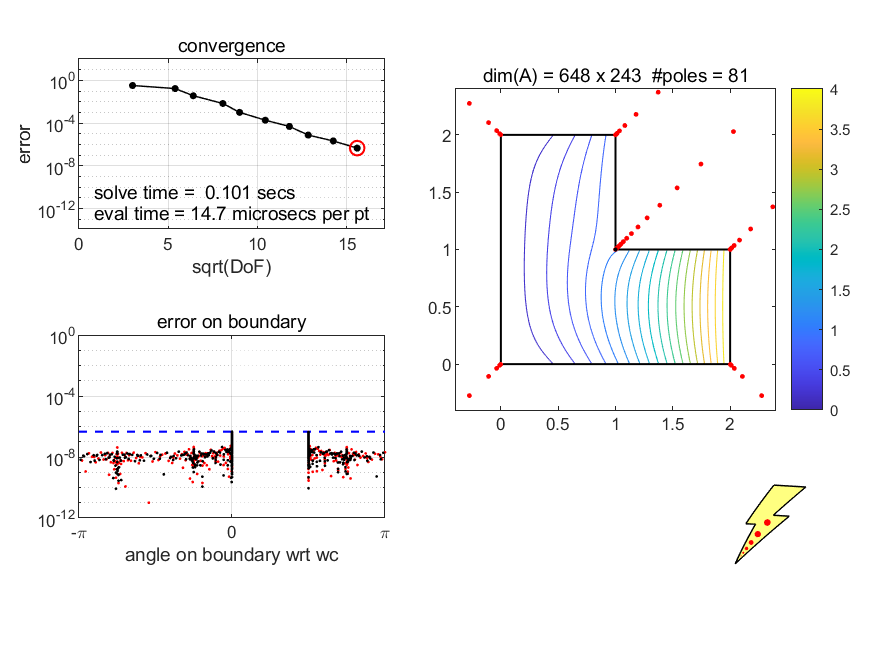

Lightning Laplace Solver
The Lightning Laplace Solver is a Matlab code that solves the Laplace equation on a polygon or circular polygon with Dirichlet or homogeneous Neumann boundary conditions, typically in a fraction of a second. By default it has 6-digit accuracy all the way up to the corners despite the singularities there, assuming the boundary data are continuous. For most problems the computation continues to be successful if the tolerance is tightened to 8 or 10 digits.
To learn how to run the code, type help laplace and note the examples displayed there. Also execute examples.
confmap is a companion to laplace for computing conformal maps of simply-connected domains. Type help confmap for information and examples. To use confmap, you must have Chebfun in your Matlab path.
laplace.m
(version 6, March 2020)
examples.m
confmap.m
laplace and confmap get their speed and accuracy from the representation of harmonic and analytic functions in terms of rational function with poles exponentially clustered near the corners. (The mathematics is related to the reason lightning strikes at sharp corners.) For details of the algorithms see Solving Laplace problems with corner singularities via rational functions, SIAM J. Numer. Anal. 57 (2019), pp. 2074-2094, and Numerical conformal mapping with rational functions, Comp. Meth. Funct. Th., to appear.
laplace is restricted to polygons and circular polygons, but the algorithm is also effective for exterior or unbounded domains, multiply connected domains, and domains with more general boundary arcs. Later versions of the code will allow for such variations, as well as extensions to biharmonic and Helmholtz problems. See New Laplace and Helmholtz solvers, Proc. Nat. Acad. Sci. USA, 116 (2019), 10223.
Output from laplace('L');:

Output from confmap('iso');:
Please send suggestions to trefethen@maths.ox.ac.uk.